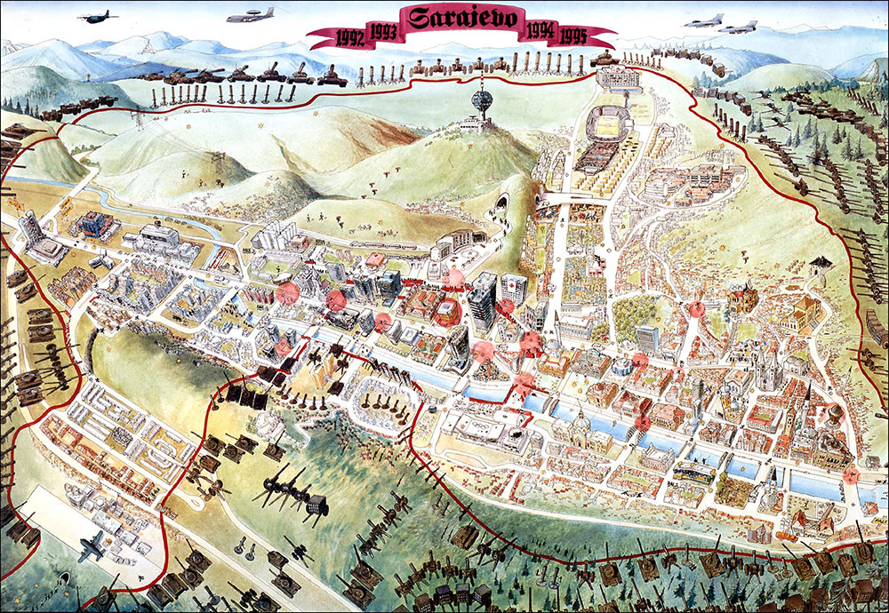
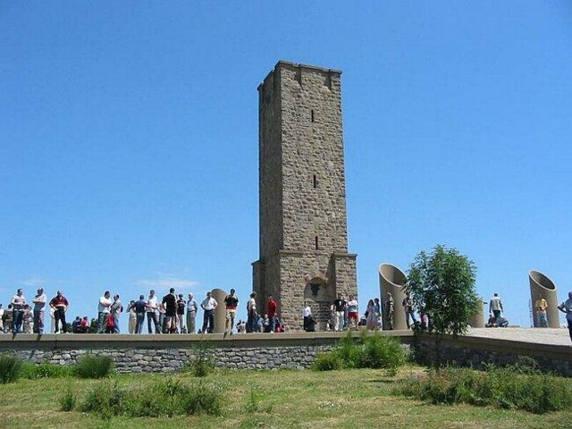
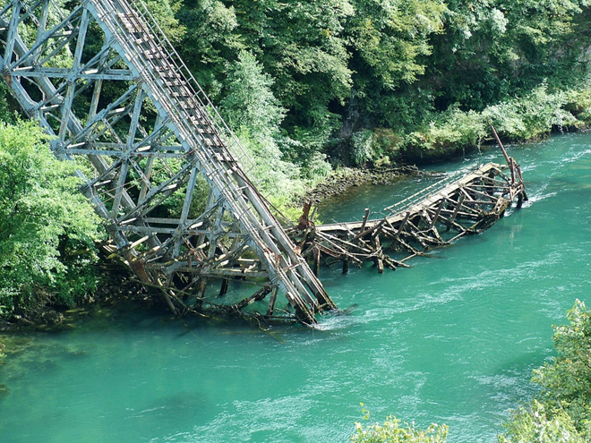
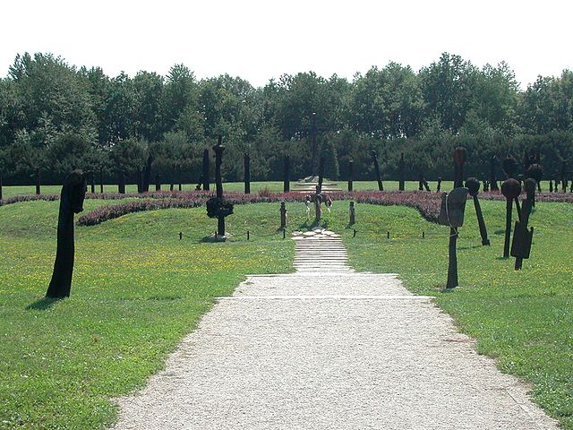
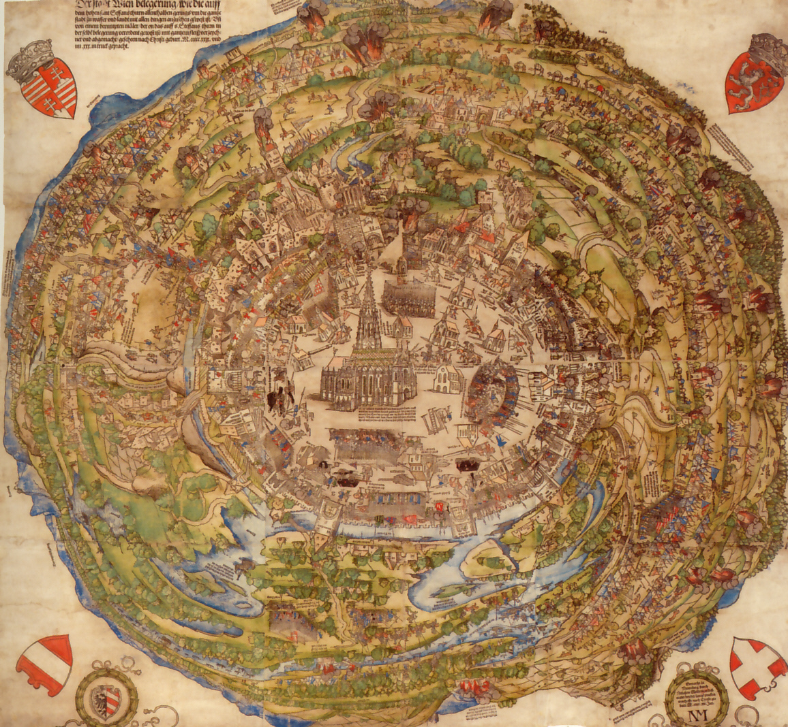

.png)
Price vojne historije
Dozivite nezaboravno iskustvo
Upoznajte historiju na potpuno novi nacin
Bojna polja
Bitke
Neki ce reci kako historija ljudskog roda predstavlja vrijeme provedeno izmedju dvije velike bitke.Naravno, ovako plastican primjer ne treba previse ozbiljno shvatati ali je neminovna cinjenica znacaja vojnih sukoba i bitaka kroz historiju. Od uspjeha ili neuspjeha neke bitke cesto je zavisio uspon ili propast nekog carstva ili drzave pa cak i sirenje ili karantinizacija sirenja religija. Jedno je sigurno, mjesta na koja Vas mi vodimo su jedna od onih koja su promijenila tok ljudske historije i samim time oblikovali u dominantnoj mjeri svijet u kome danas zivimo i radimo. Naravno, ovo su samo najznacajnije i najpopularnije lokacije, dok Vam mi donosimo jos pregrst novih i neistrazenih lokaliteta.
Opsada Sarajeva
Od mnogobrojnih bitaka koje su kao pozornicu izabrale Evropski Jerulazelm, mi izdvajamo Opsadu Sarajeva. Najduza opsada u historji modernog ratovanja, sa ogromnim materijalno-ljudskim gubitcima. Sarajevo je citavo bilo bojno polje na koje je u prosjeku padala 329 projektila dnevno i ukoliko odlucite posjetiti prijestolnicu BiH, sigurno necete biti uskraceni za mnostvo lokacija i pregrst novih informacija, kako od vodica tako i od stvarnih ucesnika ove bitke.
Kosovska bitka
Kosovska bitka (Vidovdanska bitka) odigrala se 15.juna po julijanskom ili 23. juna po gregorijanskom kalendaru izmedju snaga Otomanskog Carstva i snaga Srpske vlastele podpomognute odredom iz Kraljevine Bosne te ista predstavlja jednu od fokalnih tacaka folklora Srpskog naroda. Za sam ishod bitke u kojoj su poginula oba vrhovna komandanta (Sultan Murat I i Knez Lazar Hreljanovic) postoje mnogobrojna razilazenja. Smatra se kako je bitka na taktickom planu ipak ispala nerijesena dok je na dugorocnom strateskom planu ipak ostala zapisana kao Osmanska pobjeda. Jedno je sigurno, bitka koja je zasigurno preokrenula situaciju na Balkanu, koji je tada bio bedem protiv Osmanlijskog sirenja i bitka o kojoj su ispricane mnogobrojne legende.Zanimljivosti radi, na istom mjestu, par stoljeca ranije, Srpske snage su pobijedili Bugarsku vojsku.
Bitka na Neretvi
Poznata kao i jos "Bitka za Ranjenike"i "Fall Weiss" predstavlja okrsaje oko doline rijeke Neretve koji su trajali od Januara do Aprila 1943, vodjena izmeju snaga Nacisticke Njemacke, njihovih pomagaca i jedinica NOA Jugoslavije. Centralna tacka jeste gradic Jablanica u BiH gdje je izvrsena takticka diverzija tako sto je srusen jedini most koji je bio pod komandom partizana cime su se njemacke snage zavarale i ukopale te tako nije nastavljeno ofanzivno napredovanje nego su jedinice presle u defanzivu uprkos povoljnim taktickim uslovima. Jedince NOA-a Jugoslavije su ovaj predah iskoristile, sagradile improvizovan most i presle na drugu stranu cime su znacajno poboljsali vlastiti takticko-operativni polozaj i izbjegli potpuno okruzenje i unistenje. U neposrednoj blizini mosta nalazi se i spomen-muzej.
Mohacka bitka
Mohacka bitka je okrsaj Osmanskih i Hrvatsko-ugarskih armija, vodjen 29.augusta 1526 godine na Mohackom polju, danasnja Madjarska. Osmanlijsku vojsku predvodio je sultan Sulejman Velicanstveni sa 60 hiljada vojnika i 300 topova dok je hrvatsko-ugarsku vojsku predvodio kralj Ludovih II. Poslije poraza na Mohacu doslo je do raspada hrvatsko-ugarskog kraljevstva te otvaranja prostora za Osmanlijsko napredovanje prema Centralnoj Evropi.
Prva opsada Beca
Opsada Beca oznacava oruzani sukob Osmanskog carstva i Svetog rimskog carstva s ciljem zauzimanja Beca od strane Osmanlija. Bitka se odigrala od 27.Septembra do 15.Oktobra 1529 godine i rezultirala je Osmanskim porazom i kraj turske plime u Evropi. Poslije ovog poraza dolazi do postepenog opadanja moci Osmanskog carstva i prem da ce biti nekih lokalnih uspjeha, nakon poraza kod Beca, Osmanlije se nikad nisu oporavile. Bitno je istaci da se kasnije odigrala i cuvena Bitka za Bec 12.Septembra 1683 i jos jednom su Osmanlije dozivjele poraz. Istrazite uzbudljivu proslost Beca sa nama.